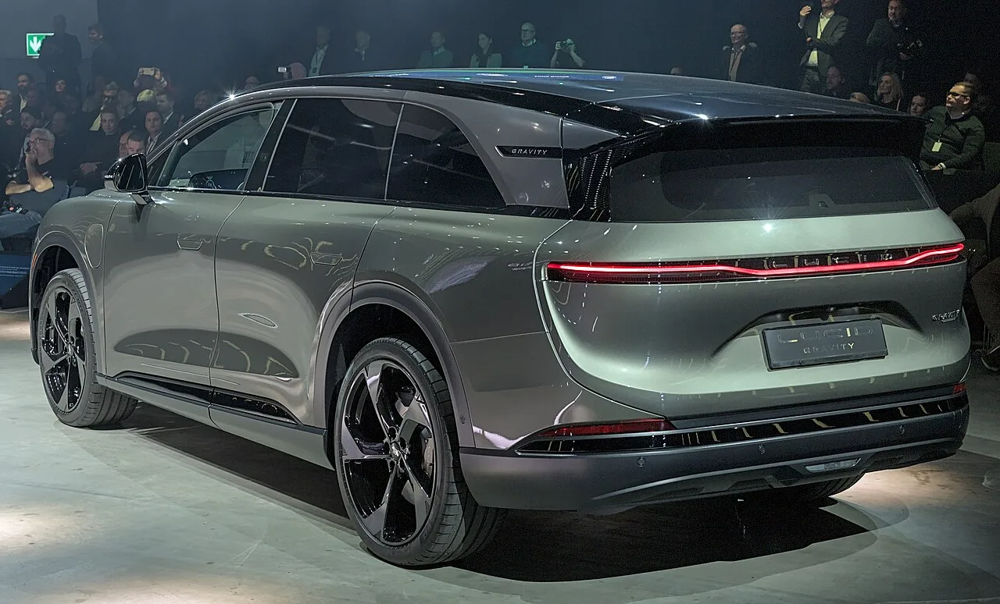

▲ 루시드 그래비티 — 코스모스는 이 대형 SUV보다 한 체급 작은 중형 SUV로 개발되며, 5만 달러 미만 가격대를 목표로 한다
루시드는 프리미엄 세단 에어(Air)와 대형 SUV 그래비티(Gravity)에 이어, 5만 달러 미만 가격대의 중형 SUV '코스모스'로 럭셔리 전기차 라인업을 넓히려 하고 있었습니다. 하지만 이 계획이 또다시 미뤄졌습니다. 당초 2026년 하반기 출시 예정이었던 코스모스는 이제 2027년, 그것도 아마 후반기에나 모습을 드러낼 것으로 보입니다.
1. "과거의 실수를 반복하지 않겠다"는 말의 무게
루시드 CEO 실비오 나폴리는 이번 연기를 발표하며 "과거의 실수를 반복하지 않겠다"고 밝혔습니다. 출시 시점에 대해서는 "2027년이 될 것으로 본다… 가능성이 가장 높은 건 2027년 하반기"라고 구체적으로 언급했습니다. 이 발언은 의미심장합니다. 루시드는 첫 모델인 에어(Air) 출시 당시 생산 램프업 지연과 품질 이슈로 곤욕을 치른 전례가 있습니다. 신임 경영진은 이런 실수를 되풀이하지 않기 위해, 제품이 완전히 준비될 때까지 기다리는 쪽을 택한 것으로 풀이됩니다. 실제로 코스모스는 현재까지 실루엣 정도만 공개됐을 뿐, 개발이 본격적인 완성 단계에 이르지 못한 것으로 알려졌습니다. 다만 대형 SUV 그래비티의 사례를 보면 이 신중함이 아주 근거 없는 것은 아닙니다. 그래비티는 2024년 말 인도를 시작했지만, 월간 인도 대수가 세 자릿수에 오르기까지 2025년 9월까지 걸렸을 정도로 양산 램프업에 시간이 걸렸습니다.
2. 재정 악화가 만든 '신중함'

▲ 루시드 에어 실내 — 루시드는 최근 분기 실적에서 예상보다 큰 손실을 발표하며 신중한 제품 출시 전략으로 방향을 틀었다
연기의 또 다른 배경은 회사의 재정 상황입니다. 루시드는 최근 2분기 실적 발표에서 예상보다 큰 규모의 손실과 매출 부진을 보고했습니다. 이런 상황에서 완성도가 떨어지는 신차를 서둘러 내놓았다가 또 한 번 품질 문제를 겪는다면, 회사 전체에 더 치명적인 타격이 될 수 있습니다. 결국 이번 연기는 "급하게 만들어서 실패하느니, 늦더라도 제대로 만들자"는 판단의 결과로 볼 수 있습니다.

▲ 루시드 에어 그랜드 투어링 — 루시드의 첫 모델로, 초기 생산 지연을 겪었던 경험이 이번 코스모스 연기 결정에도 영향을 준 것으로 풀이된다
3. 14억 달러 현금흐름 개선 계획의 일환
루시드의 신임 경영진은 '운영 재설정'을 핵심 과제로 내걸고, 14억 달러(약 1조 9,000억원) 규모의 현금흐름 개선 계획을 추진하고 있습니다. 자본지출을 줄이고 재고 관리를 효율화하는 것이 핵심 축입니다. 코스모스의 출시 연기 역시 이 계획과 무관하지 않습니다. 신차 개발과 생산 준비에 들어가는 대규모 투자 시점을 늦춤으로써, 당장의 현금 유출을 줄이려는 의도가 반영된 결정으로 해석됩니다.

▲ 루시드 그래비티 후면부 — 코스모스는 이 대형 SUV보다 저렴한 가격대로 루시드의 판매량 확대를 이끌 모델로 기대를 모으고 있다
4. 코스모스가 노리는 시장
코스모스는 루시드 라인업 중 가장 대중적인 가격대를 목표로 하는 모델입니다. 5만 달러 미만이라는 가격대는, 그동안 프리미엄·플래그십 이미지에 집중해온 루시드가 처음으로 볼륨 모델 시장에 발을 들이는 시도라는 점에서 의미가 큽니다. 다만 구체적인 배터리 용량, 주행거리, 최종 가격 등은 아직 공식적으로 공개되지 않은 상태입니다.
5. 아직 확인되지 않은 것들
"완성될 때까지 기다리겠다"는 말은 소비자에게는 아쉬운 소식이지만, 과거 성급한 출시로 곤욕을 치렀던 루시드로서는 불가피한 선택일 수 있습니다. 2027년, 코스모스가 그 기다림에 걸맞은 완성도로 등장할 수 있을지 지켜볼 대목입니다.